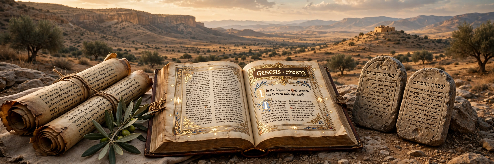

The Old Testament (OT) is the first division of the Christian Bible, composed primarily of the Hebrew Bible (the Tanakh), the collection of ancient Hebrew and partly Aramaic writings of Israel. Its contents and ordering differ between Christian traditions: Protestant canons contain 39 books, the Roman Catholic canon 46, and Orthodox canons more still, because Catholic and Orthodox churches accept the deuterocanonical books preserved in the Greek Septuagint.
| Old Testament | |
|---|---|
 The Leningrad Codex (c. 1008) | |
| Language | Biblical Hebrew, some Biblical Aramaic |
| Books | 39 (Protestant) – 49+ depending on tradition |
| Sections | Pentateuch, historical books, wisdom (poetic) books, prophets |
The Pentateuch (Torah) — Genesis, Exodus, Leviticus, Numbers, Deuteronomy — narrates creation, the patriarchs, the Exodus from Egypt and the giving of the Law. The historical books (Joshua through Esther, with additions in wider canons) recount Israel's settlement, monarchy, exile and return. The wisdom and poetic books include Psalms, Proverbs, Job, Song of Songs and Ecclesiastes. The prophets range from Isaiah, Jeremiah and Ezekiel to the twelve Minor Prophets.
The texts were composed and edited across roughly a millennium, from early poetry to works of the Hellenistic period; the canon took shape in stages — Torah authoritative by the Persian period, the Prophets by about the 2nd century BCE, and the Writings finalised later. The Septuagint, the Greek translation begun in 3rd-century BCE Alexandria, added books written in Greek (e.g. Wisdom of Solomon, 1–2 Maccabees) that became the Catholic and Orthodox deuterocanon.
"Old Testament" reflects the Christian framing of the Hebrew scriptures as the record of God's "old covenant" with Israel, superseded or fulfilled by the "new covenant" of the New Testament; the term derives from the Latin vetus testamentum and Paul's language in 2 Corinthians 3. Some scholars and churches now prefer "Hebrew Bible" or "First Testament" to avoid supersessionist connotations.